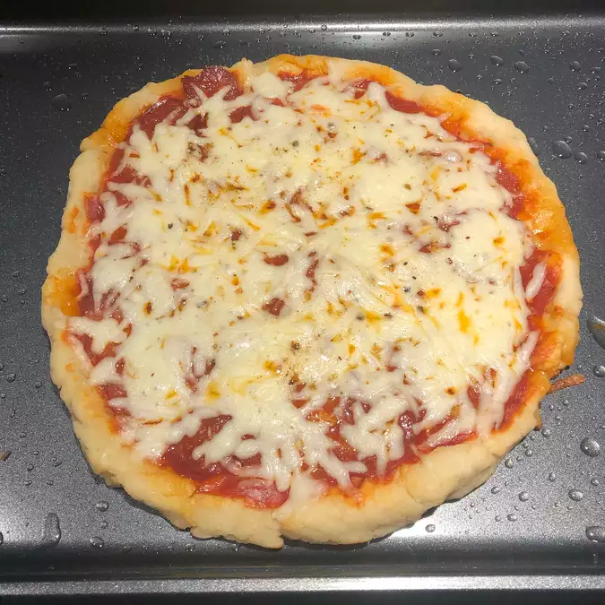

Air Fryer Hot Dogs

Description
A fast pizza.
Ingredients
- 1 1/2 cups self-rising flour, plus more
kneading
- 1 cup plain Greek yogurt
- cooking spray
Steps
-
Mix flour and Greek yogurt together in a
bowl; transfer to a work surface floured
with self-rising flour. Knead dough, adding
more flour as needed to keep dough from
being too sticky, for 8 to 10 minutes.
-
Spray a 12-inch pizza pan with cooking spray
and spread dough to edges of pan.